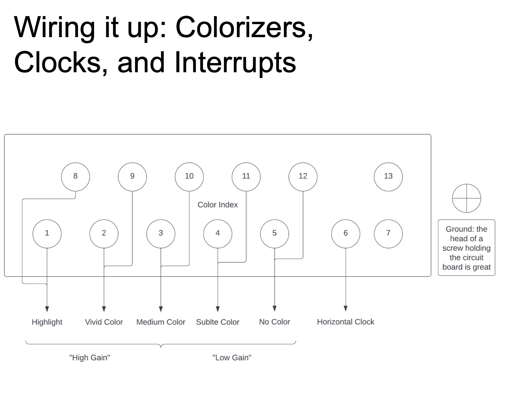
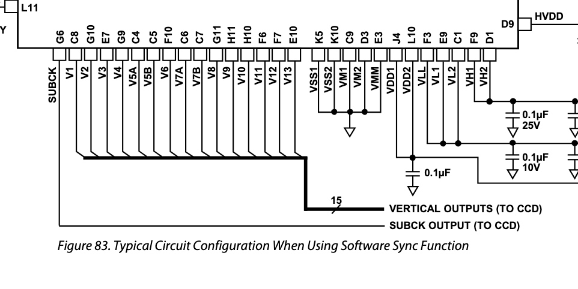

an exploration of representing image as signals in order to do silly processing, vaguely inspired by camera bending and data moshing.
Stuff being discussed in this web page
1. camera , ccds , processor
1.5 tools used, making the signal
b. bayer mosaicing
2. using audio tools
2. order of processing
4.
How you doin' ???
Nowaday, most of the time, when you want to process an image, you do it with parallel processors named GPU, 'cause they're fffffast.
fuck "fast"(I mean actually it's pretty fun those can also do some crazy things, but the point here is to diss nvidia)
/!\
Be prepared to fact check, cause I'm far from being an expert in digital photography
/!\
ccds & stuff
SO. What is actually happening in a ccd, and how are we supposed to emulate this behaviour ?
The light-catching-and-storing a aspect of the photo-taking device is splitted in multiple parts, the sensor (ccd) that actually receive the aforementioned light, and the processor, that make it into a daaata (great ! we love data).
But how is the light2data process happens ???
actually, the output of the ccd is a analog voltage signal(waw), comprised of all the pixels value, one after the other, with a correlated clock that gives a bit of info into how all those analog pixels are positioned in 2D space,
the processor then get thos two things and ADC it's way to a usable file. Analog Digital Converter, for my non-dsp-talking fellas There are some quickrs here and there though, we're used to the good ol' rgb format for the pixels, but the cheaper sensor, esp. in the early digital era actually had a bayer matrix to get all thos pixels, meaning that each pixel only get one color (guess it's eaiser that way, lazy ass sensor).
then the processor process the thing to compute rgb values for each pixel by taking into account the surrounding ones.
this stollen image should make it maybe clearer ??
stole from here = pdf about ccds
I won't mention all the other processes that happen to the picture, like codec, compression, etc... we rarelly interact with raw data.
It's a bit vague for me where the processor start and stops, I think the dematricing calculation happens once the values are already digitalized ? not sure about this one...
Just after we'll talk about one specific processor I know a bit more (cause I read the manual).
I think it does, a little, hurt to be photographed. Diane Arbus
bending
What thos silly camera bending kids do then, is to mess up the connection of the processor and mess with the ccd signal to fuckup the picture. Everything goes, filtering, messing up the clock, etc.. etc..
here are some examples with sources
This bending workshop has a super nice pdf with a lot of explanation on how to mess with your camera. The thing is, the schematic is lying a bit.
The Canon camera they bend uses the omgomg AD9923A CCD Signal Processor with V-Driver and Precision Timing Generator I'm so impressed by all thos impressive words !!!!. spec here
What this chip does basically, is thats it's the worst micro-managing boss you've met. It's geenerating clocks for thr CCD ,and processes to ouput before forwarding it to the ADC.
The CCD actually needs a lot of clock cycle to get the pixel from row to the other,
all down to the horizontal buffer that get thrown back into the processor. All those clock ticks are called "phases", and for some reason they're also mentioned as colors in some documentations, so in the workshop, when you see this picture,

actually you're looking at this part of the chip (if I'm not mistaken),

which is the vertical driver clock generation.
By bending here you're not dirrectly alter color, but break the order in which you move the electrons around in the ccd, e.g. stuff get blurry because you make back and forth instead of just going to the bottom, this kind of things.
ALl oof thsi process is very analog in nature, thus fairly hard to emulate in a discrete domain (i.e. : computo)
The main stuff that I want to experiment about is making an image a signal
a minute of silence for all the bended souls, stolen by the sensor (+ source of sould stealing in the early photofraphy)
Close to datamoshing, some people do similar things by puting their image files in audio editors, such as Audacity.